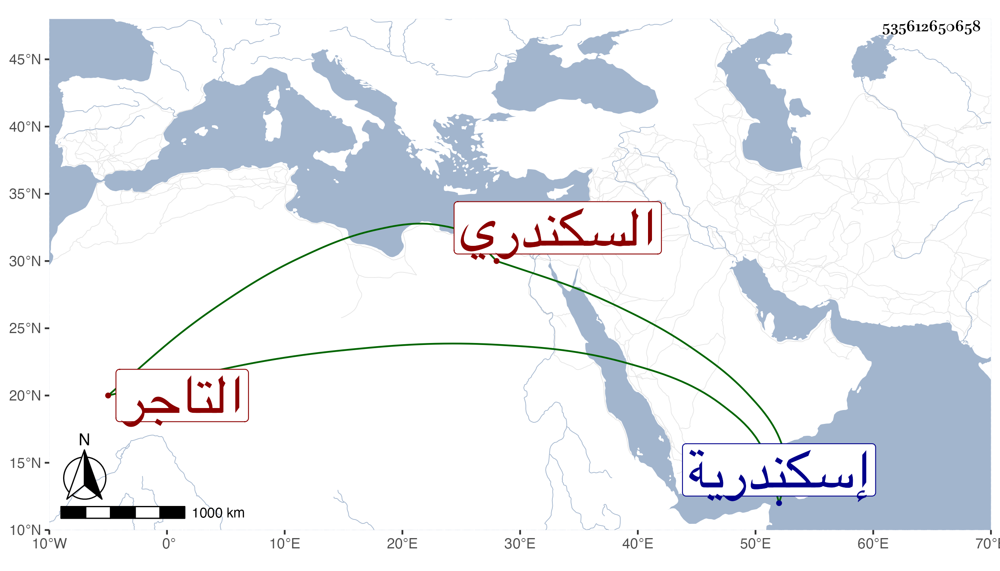

0902Sakhawi.DawLamic.ITO20230111-ara1.EIS1600.535612650658
Biography ID: 535612650658
274
عبد الرحمن بن عثمان جمال الدين السكندري الترجمان التاجر ، كان عارفا بأمور المتجر وممن صاهر في بيت ابن الأشقر . قدم من إسكندرية متوعكا فمرض مدة ثم نصل ودخل الحمام ثم انتكس ومات في رمضان سنة تسع وأربعين ومات له ابن اسمه محمد .
